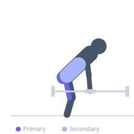
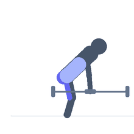

Exercise guide / Dumbbell Romanian Deadlift
Dumbbell Romanian Deadlift
The dumbbell Romanian deadlift trains the hamstrings and glutes in the same hip-hinge pattern as the barbell version but with independent dumbbells that allow each limb to move freely. The dumbbells can be held in front of the thighs or to the sides, and the movement is a good introduction to the hip-hinge pattern before progressing to a barbell.
Primary muscles
biceps femoris long head
semitendinosus
semimembranosus
gluteus maximus
Secondary muscles
erector spinae
Stabilizers
transverse abdominis
Equipment
Dumbbell (Fixed)


Starting position
- Stand with feet hip-width apart holding a dumbbell in each hand in front of the thighs. Spine neutral, chest up.
Setup
- Hold the dumbbells with palms facing the thighs. Engage lats and brace before each rep.
Steps
- Push the hips backward while maintaining a slight knee bend.
- Lower the dumbbells along the front of the legs, keeping the spine neutral.
- Descend until a hamstring stretch is felt, then drive the hips forward to return to standing.
Coaching cues
- Push your hips back as if closing a car door with your glutes
- Keep the dumbbells close to your legs — drag them down the thighs
Breathing
- Inhale on descent, exhale on the hip drive upward.
Range of motion
- Lower until a hamstring stretch is felt — typically around knee to mid-shin level.
Tempo
- 3-1-1-0
Common mistakes
- Rounding the lower back
- Bending the knees too much
Safety
- Focus on the hip hinge pattern before adding significant load
Training
- hypertrophy: 8–15 reps
- hypertrophy: 3–4 sets
- Rest: {'hypertrophy': 90}